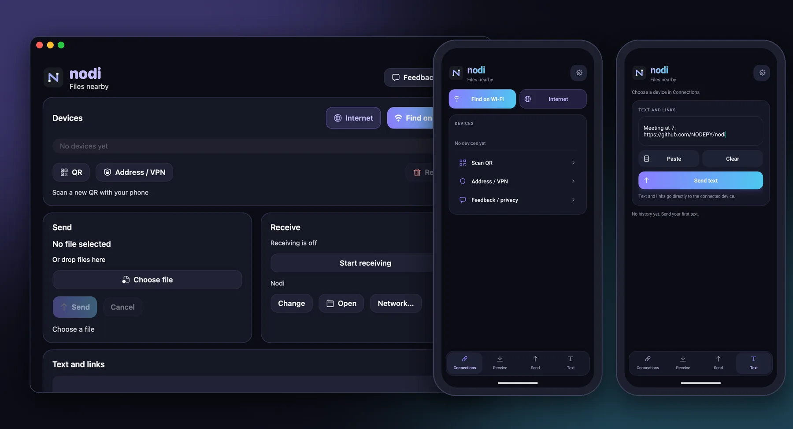
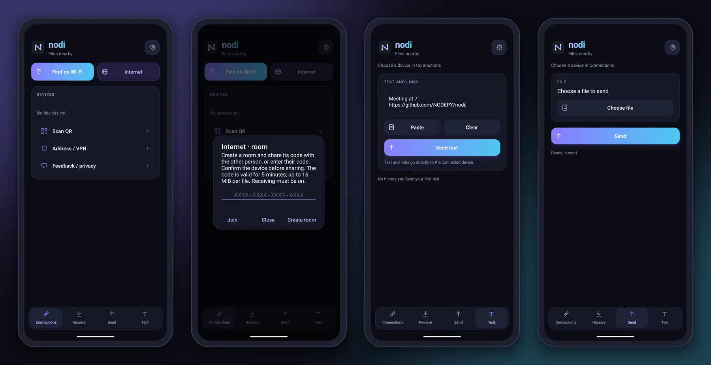
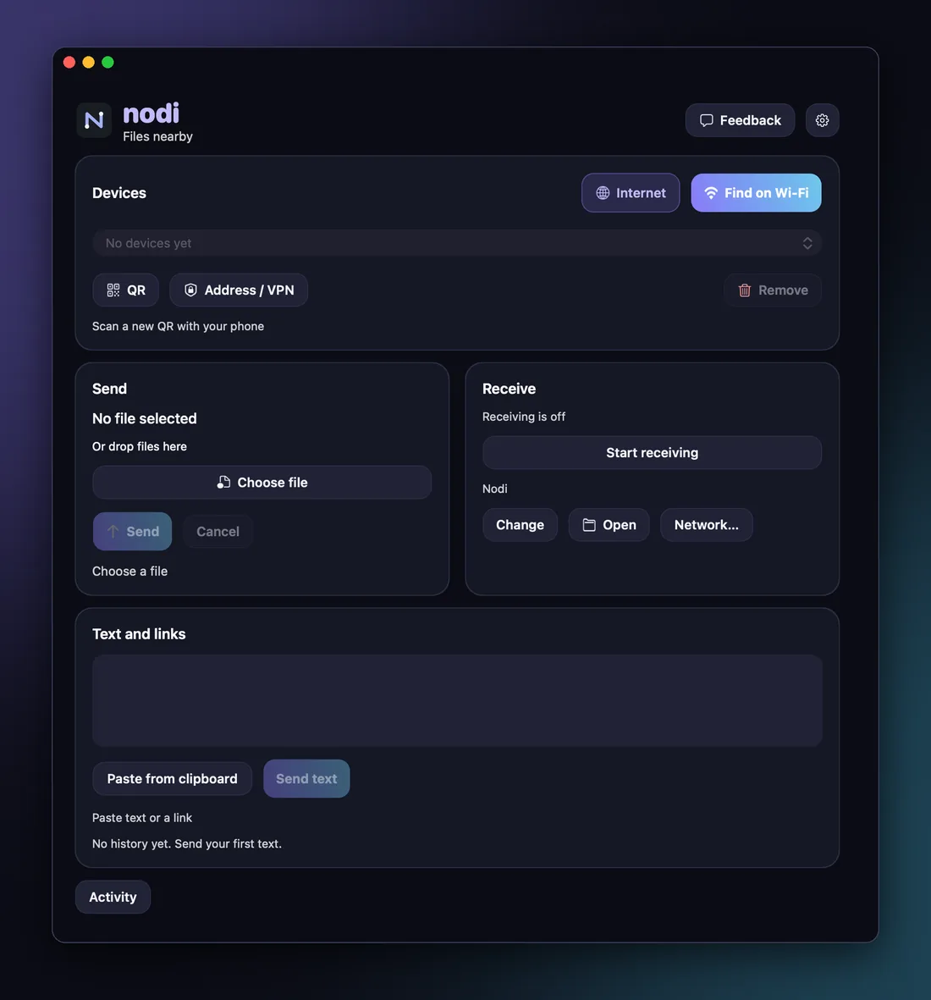

Your Mac and phone,
one tap apart.
Send files, text and links between your Mac and Android — on the same Wi-Fi or across the Internet. End-to-end encrypted. No accounts. No cloud.
Android 10+ · macOS 12+ on Apple Silicon
On a Mac, the quickest way is one command in Terminal — it checks the download and installs Nodi:
curl -fsSL https://raw.githubusercontent.com/NODEPY/nodi/main/scripts/install-macos.sh | bashScan with your Android phone to download Nodi straight to it. Nodi for desktop is available for Macs with Apple Silicon.
Nodi is not available for iPhone or iPad yet. It works between a Mac and an Android phone.

Everything you need, nothing you don't.
Nodi does one thing: moves your stuff between your own devices, quickly and privately.
Just send it
Find your phone on Wi-Fi, compare a short code, done. Multiple files in a row, up to 2 GiB each.
Works anywhere
On different networks? Create a room, share its code, approve. From then on Nodi picks Wi-Fi or the Internet by itself.
Private by design
TLS 1.3 pinned to your own devices, even through the relay. Nothing is stored in the cloud.
Text and links too
Paste a note or a URL on one device — it lands in the other device's clipboard.
No account
No sign-up, no email, no password. Install it on both devices and pair them.
Open source
Every line is on GitHub under Apache-2.0. Read it, build it yourself, or help make it better.
Pair once. Send whenever.
Install on both
Nodi for your Android phone and your Mac. Both are free.
Connect
Same Wi-Fi: tap Find on Wi-Fi and confirm the code. Elsewhere: create an Internet room and join it with the code.
Send
Pick files or paste text. Nodi goes direct when it can and through the encrypted relay when it can't.
Made for both of your screens.


Ready in a minute.
🤖 Android
- Tap Download for Android and open the APK.
- If asked, allow installs from your browser or file manager.
- Updating? Install over the old version — your devices are kept.
💻 macOS
- Open Terminal and run:
curl -fsSL https://raw.githubusercontent.com/NODEPY/nodi/main/scripts/install-macos.sh | bashPrefer the ZIP? Nodi isn't notarized yet, so on macOS 15+ open it once, then go to System Settings → Privacy & Security → Open Anyway.
Your files stay yours.
Questions, answered.
Is Nodi free?
Yes. Nodi is free and open source under the Apache-2.0 license.
Does the Nodi server see my files?
No. On the same Wi-Fi devices talk directly. Across networks the relay passes along an encrypted stream it cannot decrypt; files are never stored on it.
Why does my Mac warn me about Nodi?
The Mac build is not notarized by Apple yet. The one-command installer avoids the warning; with the ZIP, allow it once in System Settings → Privacy & Security.
Is there an iPhone or Windows version?
Not yet. Nodi currently works between a Mac with Apple Silicon and an Android phone. Windows and Linux are on the roadmap.
Are there any limits?
It's an alpha. Over the Internet files can be up to 16 MiB and receiving has to stay on; on Wi-Fi files can be up to 2 GiB. Folders and resuming aren't supported yet.
Like Nodi? Support the author.
Nodi has no ads, no trackers and no paid tier. A small tip helps pay for the relay and for the Apple notarization, and keeps the app free for everyone.
Try Nodi today.
Free, open source and private. Two downloads and you're done.